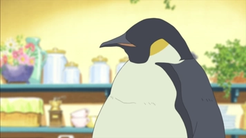
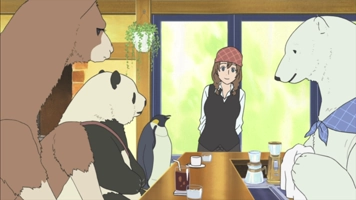
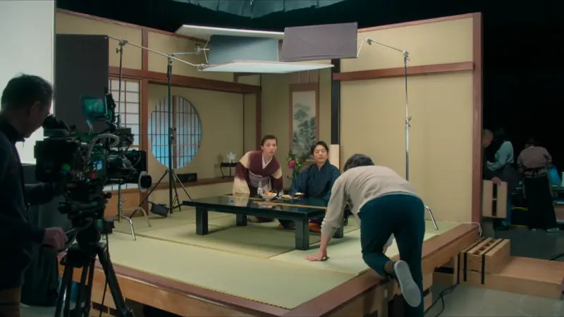
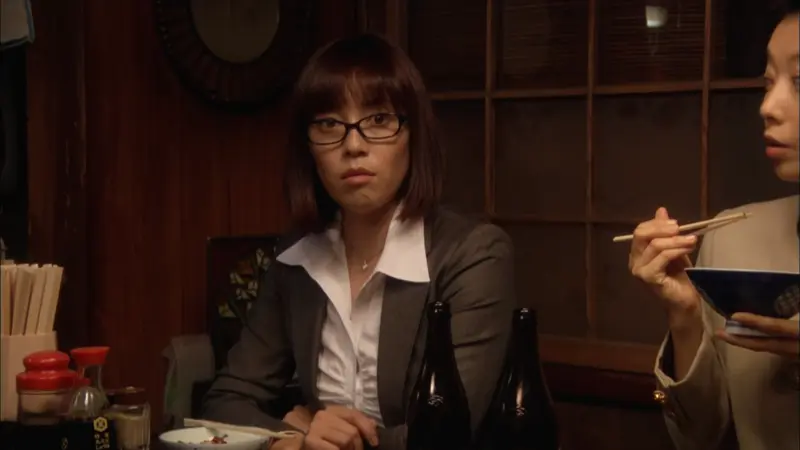
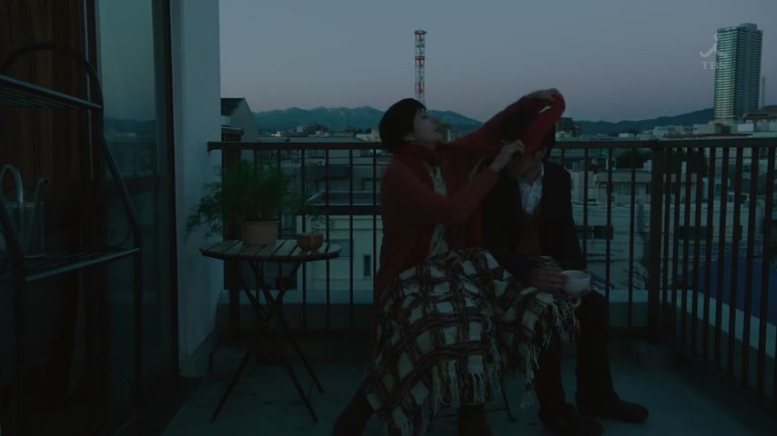
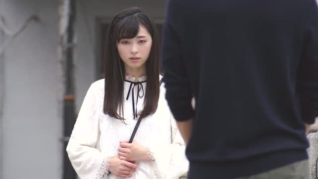
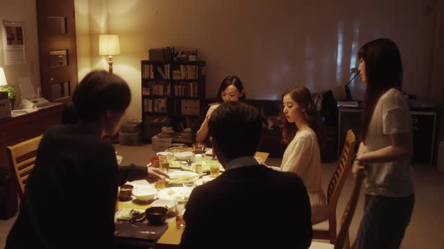
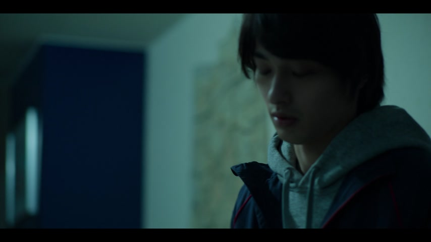

さ

Shirokuma Cafe · Season 1, Episode 3
僕なんてさ、パン屋に行くたびに思うよ。
"Me, like, every time I go to a bakery, I think that."
さ is a casual filler, like "like" or "you know". You drop it right after a chunk of the sentence (a word, a phrase), at the spot where you'd pause. It adds no meaning. It just says "stay with me, there's more coming".
On this card, the penguin starts with 僕なんて ("me, I...") and adds さ to hold the floor before he gets to his point. Take さ out and the sentence means exactly the same.
Casual speech only, never with です or ます. It also often sits on the end of a sentence you leave hanging: ～けどさ ("..., but"), ～でさ ("and so...").
Examples
You start telling a friend what happened yesterday.
昨日さ、駅で先生に会ったよ。
"Yesterday, like, I ran into our teacher at the station."
CasualYou want your roommate's attention for a second.
あのさ、ちょっといい？
"Hey, got a sec?"
CasualA friend asks why you're late. You sigh.
電車が止まってさ。
"The train stopped, and, you know..."
The rest ("so I couldn't get here") is left unsaid.
CasualYou're about to suggest something to a friend.
今度さ、一緒に行こうよ。
"Next time, let's go together."
CasualWith and without
昨日、駅で先生に会った。
"Yesterday I ran into the teacher at the station." Just the fact.
昨日さ、駅で先生に会った。
Same meaning, but now it sounds like you're starting a story with a friend.
あの、すみません。
"Um, excuse me." Getting a stranger's attention.
あのさ
"Hey, listen." Only to friends and family.
Sentence mining

Shirokuma Cafe · Season 1, Episode 4
今日も、縦列駐車ができなくってさ。
"I couldn't parallel park again today, you know."
さ on the end: he leaves the rest (how annoying it was) unsaid.

Source unknown No source
あの最後の目線なんだけどさ。
"About that last look into the camera..."
～なんだけどさ: a common way to bring up a topic before you say what you think.

Source unknown No source
あんたさ、ホント情けないわね。
"You know what? You're really pathetic."
さ right after あんた: she grabs his attention first, then hits him with it.

Quartet · Episode 2
あっちにさ かわいいカフェあるんだけど
"Over there, there's this cute cafe..."
A little pause after あっちに before the news.

Good Morning Call · Season 2, Episode 9
それで 徹夜でさ
"So we were up all night, and..."
～でさ: the story keeps rolling, "and so...".
1 Litre of Tears · Episode 1
別に怒ってないけどさ。
"I'm not angry or anything, but..."
～けどさ: a soft "but...", and the rest hangs in the air.

Million Yen Woman · Episode 5
今日の 自信作なんだけどさあ
"This is today's best dish, so..."
さあ is just a stretched さ.

The Journalist · Episode 1
いや 分かってんだけどさ
"Yeah, I know, but..."
Same けどさ, said while pushing back a little.